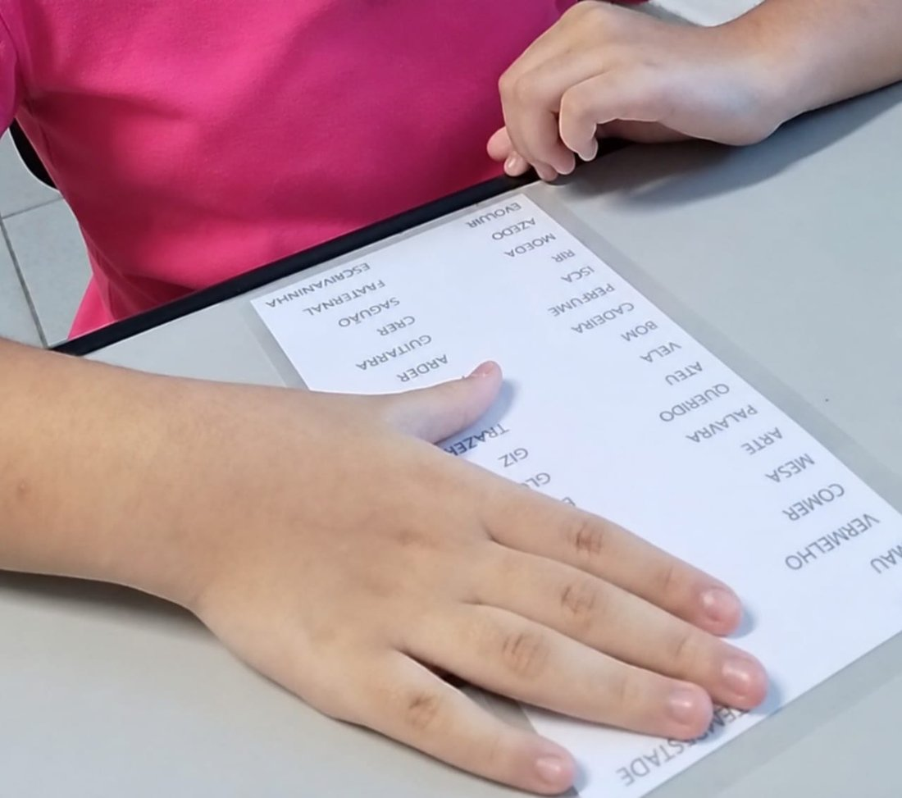
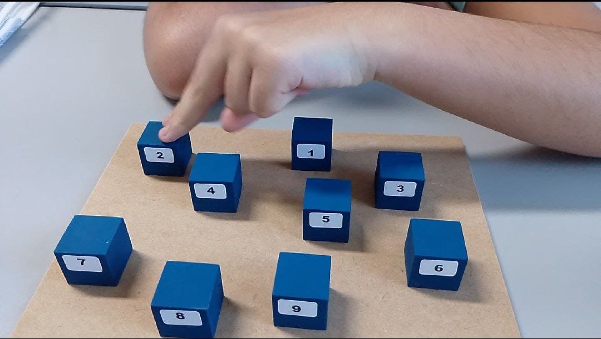
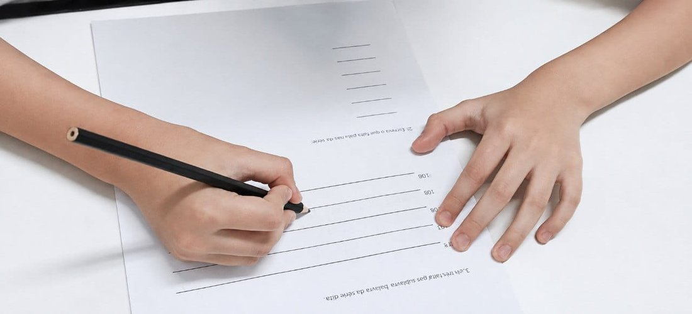
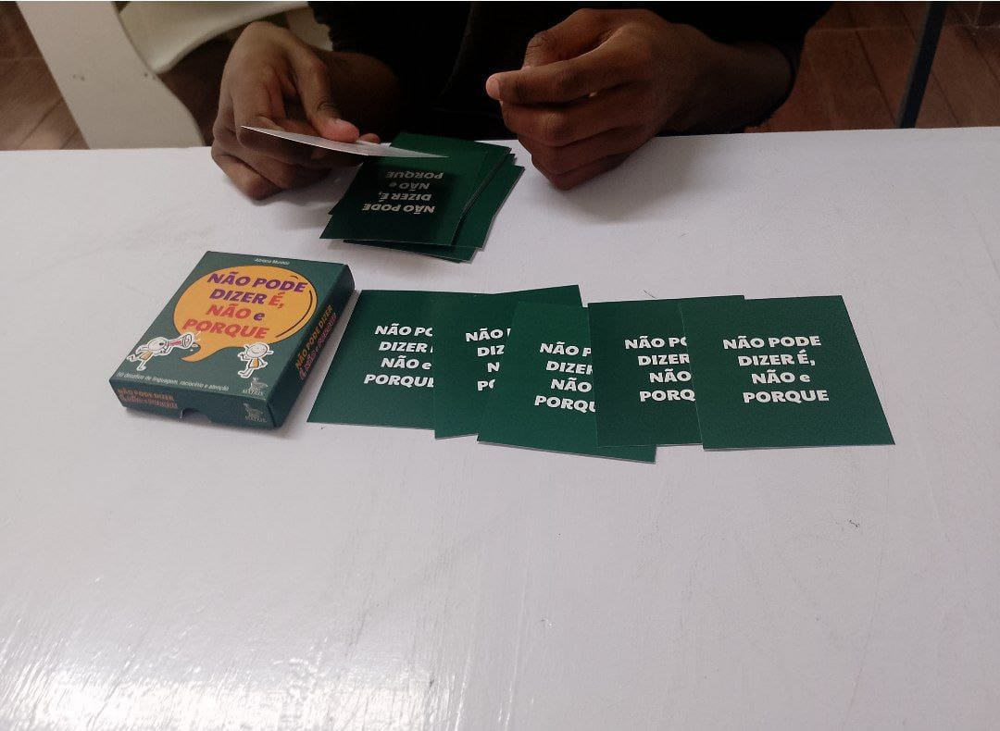
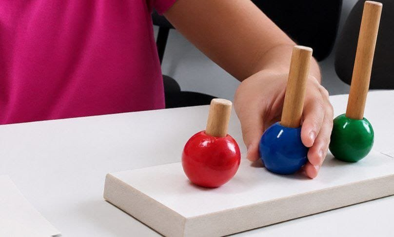
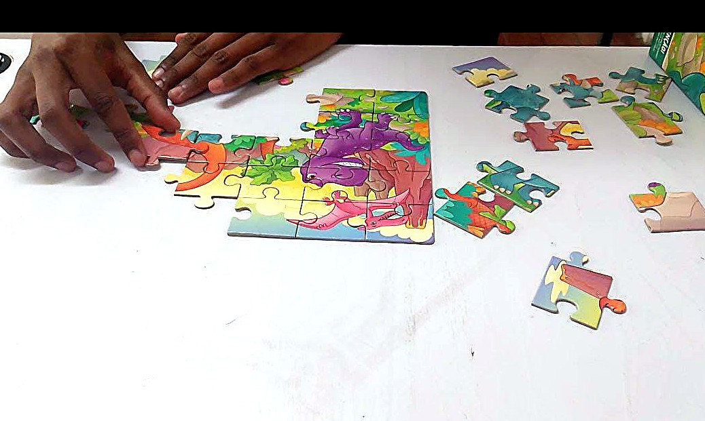

Dificuldade de leitura
Trocas de letras, leitura lenta ou pouca compreensão do que foi lido.
Neuropsicopedagogia Clínica · Moema, SP
Avaliação, intervenção e orientação familiar baseadas em evidências científicas, conduzidas com escuta, técnica e acolhimento. Para que cada criança encontre o seu próprio caminho de aprender.
Identificação
Muitas famílias chegam até a avaliação neuropsicopedagógica depois de perceber, ao longo do tempo, pequenos sinais que se repetem na rotina escolar. Reconhecê-los é o começo de um cuidado mais direcionado.
Trocas de letras, leitura lenta ou pouca compreensão do que foi lido.
Notas abaixo do esperado mesmo diante de esforço e horas de estudo.
Dispersão frequente durante tarefas, leitura ou explicações em sala.
Letra pouco legível, trocas ortográficas persistentes ou organização confusa.
Choro, resistência ou desânimo diante de tarefas e provas escolares.
Ritmo diferente do esperado para a idade, sem uma causa clara identificada.
Se você reconheceu um ou mais desses sinais, uma avaliação especializada pode esclarecer as causas e apontar o caminho mais adequado para o seu filho.
Sobre a profissional
Formada em Pedagogia e pós-graduada em Neuropsicopedagogia Clínica, Aneline construiu sua trajetória dentro da sala de aula, como estagiária, auxiliar e, depois, professora.
Foi nesse contato diário com crianças em fase de alfabetização que nasceu sua maior curiosidade: entender como o cérebro aprende e por que cada criança desenvolve suas habilidades em um ritmo tão particular.
Essa busca a levou à Neuropsicopedagogia Clínica, área em que hoje dedica sua prática a avaliar, intervir e orientar famílias de crianças e adolescentes com dificuldades de aprendizagem, sempre com um olhar técnico, ético e, acima de tudo, humano.
Jornada de cuidado
Um processo claro, conduzido em etapas, para que a família entenda exatamente onde está e para onde caminha.
Primeiro contato pelo WhatsApp para entender a demanda e agendar o encontro inicial.
Encontro com a criança ou adolescente para investigar as dificuldades de aprendizagem.
Plano individualizado para melhorar o desempenho da criança ou adolescente.
Atendimento especializado
Processo investigativo que identifica como a criança aprende, quais funções cognitivas estão envolvidas em suas dificuldades e o que pode ser feito a partir daí.
Saber mais →Sessões estruturadas com estratégias específicas para desenvolver as funções e habilidades identificadas na avaliação.
Saber mais →Encontros com pais e responsáveis para alinhar estratégias, esclarecer dúvidas e fortalecer o apoio dentro de casa.
Saber mais →Por que um acompanhamento particular
Cada criança tem seu próprio tempo e sua própria forma de aprender. Por isso, cada etapa do acompanhamento é pensada individualmente, nunca em modelos prontos.
Cada sessão é conduzida a partir das reais necessidades da criança.
Metas e estratégias traçadas de acordo com a avaliação de cada criança.
Estímulo às funções de atenção, memória, leitura e raciocínio.
Pais e responsáveis participam ativamente de cada etapa do processo.
Ferramentas práticas para o dia a dia escolar e familiar.
Espaço seguro e tranquilo, pensado para o bem-estar da criança.
Para quem é o atendimento
O atendimento é indicado para crianças e adolescentes que apresentam:

Onde tudo acontece
Um espaço pensado para acolher, silencioso, organizado e preparado para que a criança se sinta à vontade desde o primeiro encontro.





Dúvidas frequentes
Reunimos aqui as dúvidas mais comuns no primeiro contato. Se a sua não estiver aqui, fale diretamente com a Aneline pelo WhatsApp.
Tirar minha dúvida →É a profissional que investiga a relação entre o funcionamento do cérebro e o processo de aprendizagem, identificando as causas de dificuldades escolares e propondo intervenções específicas para cada criança.
A avaliação é feita em encontros presenciais, com atividades específicas baseadas em evidências científicas, para investigar as funções cognitivas envolvidas na aprendizagem. Ao final, é entregue uma devolutiva com o diagnóstico funcional e as orientações.
O tempo varia conforme a idade e a demanda de cada criança. Em geral, a avaliação é concluída em algumas semanas, com encontros semanais.
A quantidade de sessões é definida a partir do plano de intervenção, construído após a avaliação, e é revista periodicamente conforme a evolução da criança.
O atendimento é exclusivamente particular, o que permite um cuidado individualizado e sem limitações impostas por convênios.
Sim. Todos os atendimentos acontecem presencialmente, no consultório em Moema, com também atendimento na região da Vila Mariana, em São Paulo.
Como chegar
Fácil acesso pela Avenida Ibirapuera, com atendimento também na região da Vila Mariana.
Avenida Ibirapuera, 2120 — Moema, São Paulo/SP
Ver rota no Google MapsDê o primeiro passo
Agende uma conversa e descubra como a avaliação neuropsicopedagógica pode trazer clareza para a jornada escolar do seu filho, com todo o cuidado e atenção individual que ele merece.
Agendar pelo WhatsApp